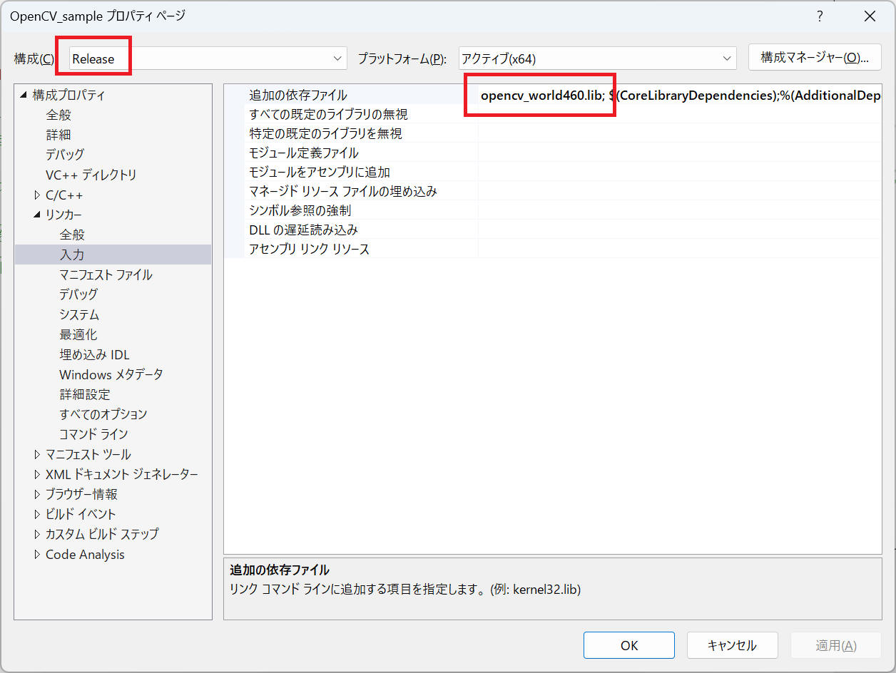

本ページは i-PRO株式会社 の有志メンバーにより記載されたものです。
本ページの情報は ライセンス に記載の条件で提供されます。
OpenCV ホームページからインストーラを入手してインストールし、Visual Studio で必要な設定を行って使用できるようにするまでの手順を記載します。
| コンパイラ : | Visual Studio 2022 pro., | Version 17.4.3 |
| ライブラリ : | OpenCV, | 4.6.0 |
| OS : | Windows11 home, | 22H2 |
ブラウザで https://opencv.org/releases を開き、OpenCV-4.6.0 の Windows をクリックしてインストーラをダウンロードします。
ダウンロードしたファイル（ここでは "opencv-4.6.0-vc14_vc15.exe"）をダブルクリックしてインストーラを起動します。"Extract to:" に "C:\" を入力して [Exctract] ボタンをクリックします。
下図はインストール中の様子です。
"C:\opencv" フォルダができているので、このフォルダ名を "opencv4.6.0" へ変更します。
NOTE
このフォルダ名変更は必須ではありませんが、今後の新しい OpenCV バージョンを追加でインストールしていく場合にいろいろ都合が良いので実施を推奨します。
環境変数 Path へインストールした OpenCV へのパスを設定します。
スタートボタンを右クリック > "設定" > "システム" > "バージョン情報" > "デバイスの仕様" > "システムの詳細設定" をクリックすると、"システムのプロパティ"（下図） を表示します。
[環境変数(N)...] ボタンをクリックすると下図画面を表示します。
下段の「システム環境変数(S)」にある Path を選択して、［編集(I)...］ボタンをクリックします。
［新規］ボタンをクリックして "C:\opencv4.6.0\build\x64\vc15\bin" を入力し、［OK］をクリックします。
全てのウィンドウを閉じてから、Windows を再起動します。
以上で OpenCV のインストールを完了です。
以降は "Visual Studio" で新しいプロジェクトを作成するたびに行う設定手順の説明です。
以降は "Visual Studio" で行う設定についての説明です。新しいプロジェクトを作成するたびにこれら設定を行う必要があります。
Visual Studio を起動して「新しいプロジェクトの作成(N)」をクリックします。
ここでは説明として「コンソール アプリ」のプロジェクトを選択しますが、あなたが作成するアプリの適切なプロジェクトを選択します。
選択後［次へ(N)］ボタンをクリックします。
"プロジェクト名"、"場所"、"ソリューション名" を設定します。
ここでは "OpenCV_sample" という名称を設定しました。
設定後［作成(C)］ボタンをクリックします。
以上の設定を完了した直後の画面です。
ソリューションエクスプローラーのプロジェクト名（ここでは OpenCV_sample）を右クリックして、
"プロパティ" >
"構成プロパティ" を開きます。
"構成" を "全ての構成" にします、
続いて "C/C++" > "全般" > "追加のインクルードディレクトリ" に "C:\opencv4.6.0\build\include" を入力します。
"リンカー" > "全般" > "追加のライブラリディレクトリ" に "C:\opencv4.6.0\build\x64\vc15\lib" を入力します。
"構成" を "Release" にします。
"リンカー" > "入力" > "追加の依存ファイル" に "opencv_world460.lib" を追加します。

"構成" を "Debug" にします。
"リンカー" > "入力" > "追加の依存ファイル" に "opencv_world460d.lib" を追加します。
以上の設定が正しくできていることを簡単なテストプログラムを作成することで確認します。
"OpenCV_sample.cpp" に以下の動作確認用プログラムを入力します。
#include <iostream>
#include <opencv2/opencv.hpp>
using namespace cv;
int main()
{
Mat img_src = Mat::zeros(Size(640, 480), CV_8UC3);
imshow("src", img_src);
waitKey(0);
return EXIT_SUCCESS;
}
メニューバーの "ビルド" > "OpenCV_sample のビルド" をクリックします。
出力の最後に「失敗 0」を表示すればビルド成功です。
"デバッグ" > "デバッグなしで開始" をクリック、でプログラムを実行します。
タイトルバーに "src" と書かれた黒いウィンドウを表示すれば成功です。
このエラーが出る場合、環境変数 Path を設定する を再確認してください。また Path で設定したフォルダに "opencv_world460.dll" が存在することを確認してください。
本ページの情報は、特記無い限り下記ライセンスで提供されます。
| 2023/1/18 | - | 新規作成, | 木下英俊 |
i-PRO - Programming Items トップページ